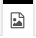
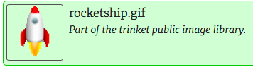

Le langage HTML
L’Hypertext Markup Language, généralement abrégé HTML, est un langage de contenu et de description interprété par le navigateur.
Instructions en HTML
Testons nos premières instructions en html.
Les arguments pour chaque instruction sont mis entre la balise d’ouverture, par exemple <h1> et de fermeture, </h1>.
Testez le vous même: Allez dans l’editeur en ligne squarefree.com et copier-coller le script suivant:
<h1>Wanted!</h1>
Comment cette instruction est-elle interprétée par le navigateur (partie inférieure de l’écran)?
Les balises principales
Ce sont la plupart du temps des balises de type <balise>argument</balise>
| element | exemple d’instruction html | rendu navigateur |
|---|---|---|
| h1 (titre principal) | <h1>Mon titre principal</h1> |
Mon titre principal |
| h2 (titre secondaire) | <h2>Mon titre secondaire</h2> |
Mon titre secondaire |
| p (paragraphe) | <p>Voici le contenu d'un paragraphe</p> |
Voici le contenu d’un paragraphe |
| div (container) | <div><p>Contenu</p><p>autre contenu</p></div> |
Contenuautre contenu |
| a (lien) | <a href="https://www.anti-moustique.net/raquette-moustique/">le meilleur antimoustique au monde</a> |
le meilleur antimoustique au monde |
| img (image) | <img src="https://i.postimg.cc/MHjjW4wg/moustique.png"> |
|
| ul li |
Balise de lien hypertexte
Dans le tableau précédent, la balise <a href="...">texte à afficher</a> possède un attribut obligatoire: href="...". Cet attribut contient le lien hypertexte vers lequel le navigateur vous mène lorsque vous cliquez sur le texte à afficher.
Balise image
Pour ajouter une image : on utilise la balise <img>:
<img src="robot.png">
Celle-ci doit obligatoirement avoir un attribut src suivi du chemin (local ou URL de type http://…) vers le fichier image. Les attributs d’une balise, comme ici src permettent de configurer les éléments.
Remarque: La balise <img> est une balise orpheline, qui ne possède pas de balise de fermeture: <img src="lien/vers/l/image.png">
Travail pratique
Dans une page html, les instructions HTML sont mises dans un fichier dont l’extension est .html. Ici, nous utiliserons un editeur en ligne, qui donne directement le rendu visuel de la page, sans avoir à manipuler de fichier.
Tout le contenu de la page sera disposé entre les balises <body> … </body>
Si l’affichage de l’editeur n’est pas optimal, utiliser le lien direct sur la page en plein écran
Nous allons modifier le script de la page pour obtenir quelque chose ressemblant à celle-ci (mais en français):
1) Traduire et modifier le texte (Description) pour qu’il soit rédigé en français.
2) Sous le paragraphe Description:.. vous ajouterez un nouveau paragraphe <p> contenant:
If you have any information, please contact 6207 332 2310
Ca paragraphe devra être positionné AVANT la femeture </div>.
3) Ajouter un nouveau paragraphe (vide): Dans index.html, ajouter les balises <p> </p> AVANT la femeture </div>.
4) Ajouter un lien dans ce paragraphe vide <p> </p> vers une nouvelle page du site:
<a href="lune.html">=> Go to Lune Project</a>
5) Sur votre cahier SNT: recopier les instructions HTML que vous avez rajoutées dans cette page.
Projet de recrutement lunaire
Dans l’onglet lune.html, écrire le script HTML pour obtenir la page suivante:
Aide:
1) Pour charger l’image dans le projet : bouton de droite 
2) Puis selectionner l’image : 
Penser à adapter le nom de l’image pour la balise <img>.
3) Vérifier que le fichier Lune.html contient bien la balise suivante dans l’entête du fichier afin de pointer vers le fichier style.css. Cette balise doit être placée entre les balise<head>...</head> :
<head>
<link rel="stylesheet" href="style.css">
</head>
Sinon, ajoutez la.
4) Ajouter un lien Retour vers la page index.html
5) Sur votre cahier SNT: recopier l’instruction HTML que vous avez ajoutée pour créer ce lien retour.
Le langage CSS
CSS est le langage qui décrit le style et la mise en forme du document HTML. Il décrit comment les elements HTML doivent être affichés et remplace les règles de style par defaut appliquées par le navigateur.
Les déclarations CSS doivent en principe se trouver dans un fichier à extension .css. Chaque déclaration se rapporte à un type d’élément de la page HTML, grâce au sélécteur. Et chaque déclaration contient une ou plusieurs règles:
Déclaration:
sélécteur {propriété: valeur;}
Règle:
propriété: valeur;
Une déclaration CSS comprend :
- un sélecteur, qui peut être le nom d’une balise HTML (comme par exemple div dans l’exemple proposé)
- une ou plusieurs règle(s) contenant une propriété ainsi que la valeur correspondante.
Observez bien les caractères spéciaux { } : et ; utilisés pour contenir et séparer les instructions. Ces instructions peuvent être mises à la ligne, ou bien dans une seule ligne :
p {
font-weight: bold;
border: 2px solid red;
}
est équivalent à :
p {font-weight: bold; border: 2px solid red;}
Ici, TOUTES les balises p utilisées dans le document html héritent des propriétés suivantes :
- une bordure rouge (red) encadre le texte
- les caractères sont mis en GRAS (bold)
Ces instructions {propriété1 : valeur; } sont référencées sur le site : https://www.w3schools.com/css/default.asp
A vous de jouer : Vous allez modifier le fichier de style de votre projet, mais cette fois, à l’aide d’un editeur de texte.
1) Cliquer sur l’onglet style.css. Combien y-a-t-il de déclarations, et de règles css dans ce fichier? Repondre sur le cahier SNT.
2) Diminuer la dimension de l’image à 150px: Dans le fichier style.css, ajouter la règle CSS suivante, à la suite de la précédente déclaration (donc APRES l’accolade } ):
img {
width: 150px;
}
Prolongement: travailler sur le fichier local
1) Téléchargez votre projet sur votre ordinateur. A l’aide du menu en haut à gauche de la fenêtre d’edition, selectionner Download:
2) Atteindre le fichier à l’aide de l’explorateur de votre ordinateur.
Dézipper le fichier téléchargé et deplacer son contenu dans vos Documents.
Normalement, l’explorateur devrait montrer le contenu du nouveau dossier, avec tous les fichiers du projet.
Si votre projet n’est pas complètement terminé, vous pouvez utilisez celui-ci: projet_correction
Vous pouvez maintenant ouvrir la page index.html avec votre navigateur, et vérifier que le lien Go to Lune Project vous envoie bien sur la page Lune.html.